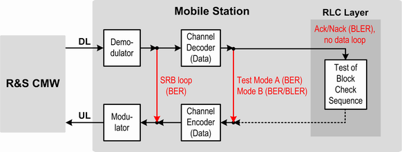

Test Modes
The GPRS test modes A and B are specified in 3GPP TS 44.014. Any (E)GPRS MS can operate either in test mode A, in test mode B or in both test modes. In addition to the GPRS test modes, 3GPP defines an EGPRS switched radio block (SRB) loopback mode. It must be supported by any EGPRS MS.
- "Test Mode A":
In test mode A, the MS transmits continuously RLC data blocks containing a pseudo random data sequence.
The test mode can be maintained until the TBF is released. Alternatively the duration of test mode A can be limited to a fixed number of PDUs that the MS has to transmit. - "Test Mode B":
In test mode B, the R&S CMW transmits RLC blocks on the downlink containing a pseudo random data sequence. The MS loops back the received data.
As long as the TBF is established, the test mode is maintained. Symmetrical coding schemes must be used (configured) in downlink and uplink. - SRB:
The EGPRS switched radio block loopback mode is a physical RF layer loopback performed before channel decoding. It is designed to support BER testing for EGPRS.
Coding schemes CS-x are not supported in SRB loopback mode.
As there is no channel decoding/encoding, no CRC values are calculated and no CRC check is performed.
It depends on the test mode which measurement results are available. The following table provides an overview.
Result | Test mode A | Test mode B | SRB |
|---|---|---|---|
BER | - | X | X |
DBLER | - | X | X |
USF BLER | X1) | X2) | X |
False USF detection | X | X2) | X |
CRC errors | X | X | - |
1) Please note that in test mode A, the uplink state flag in the downlink signal is always CS-1 coded, independent of the currently configured downlink coding scheme. 2) Recommended with mode USF BLER only | |||
The following figure shows the data flow:
- For a PS BER measurement (SRB loop and test mode A/B) and
- For a PS BLER measurement (test mode B and RLC layer Ack/Nack)

Loops for BER PS and BLER measurements